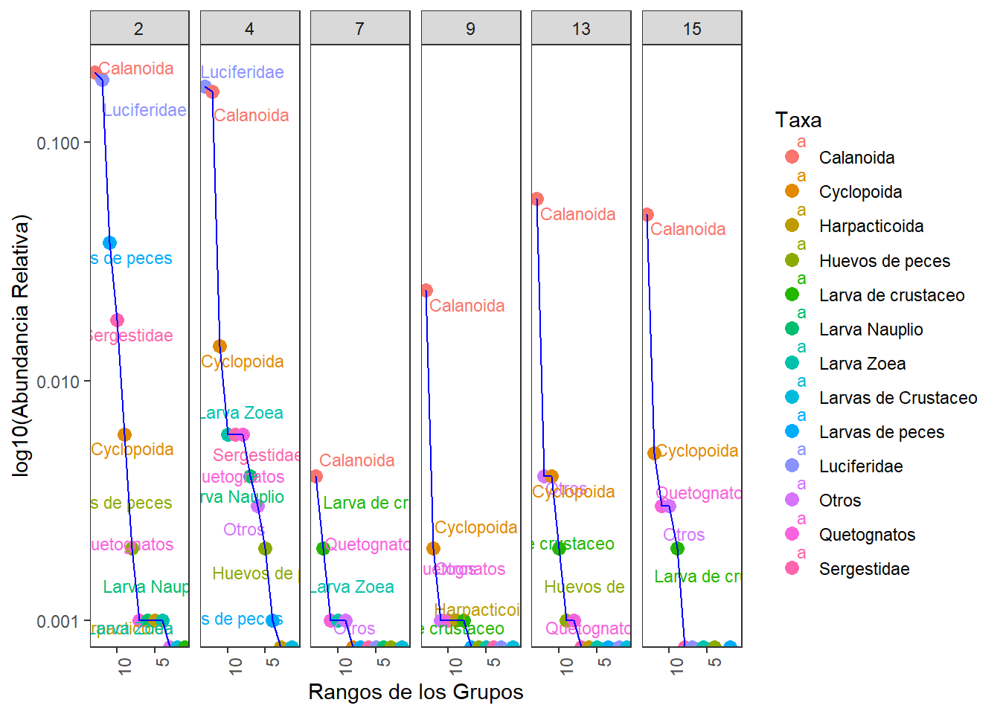
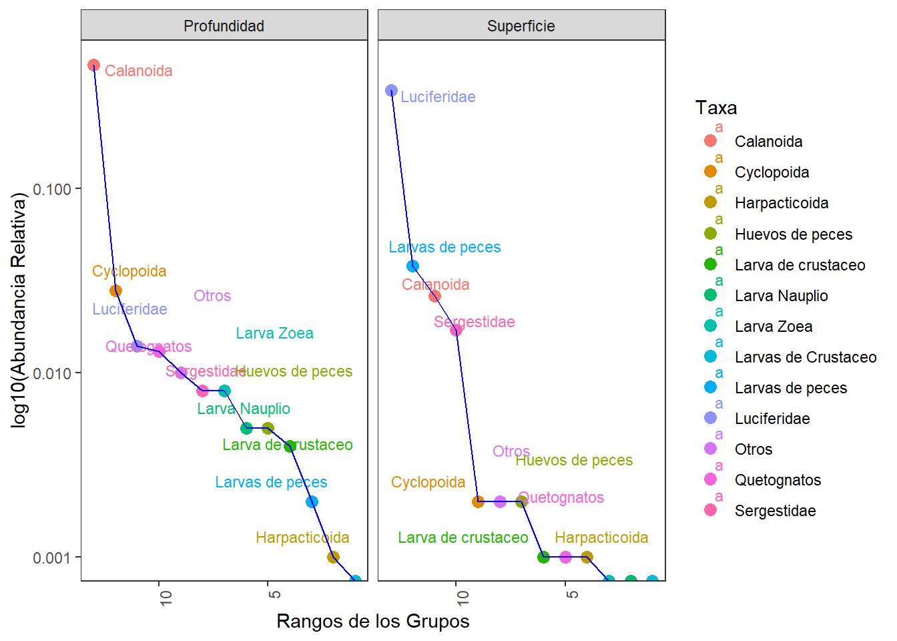
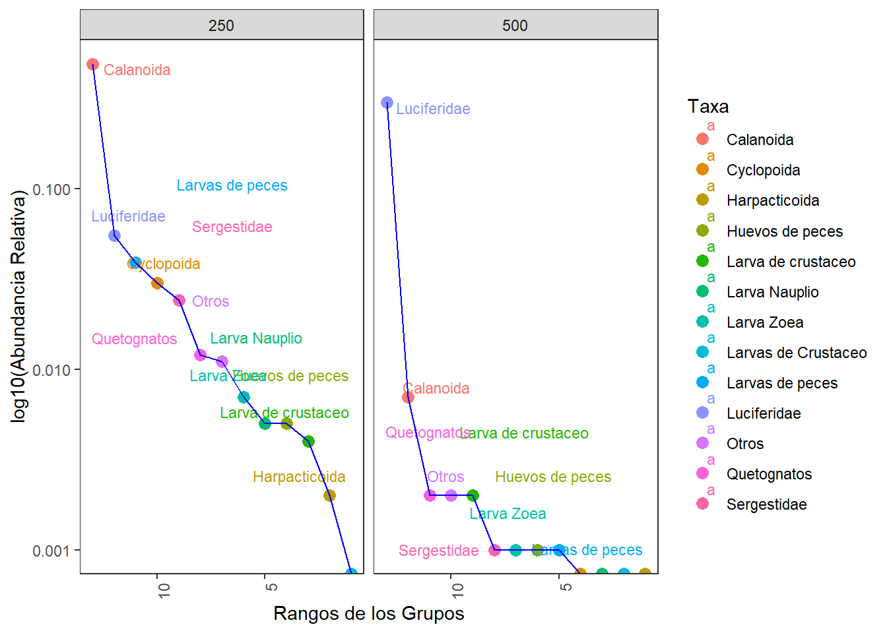
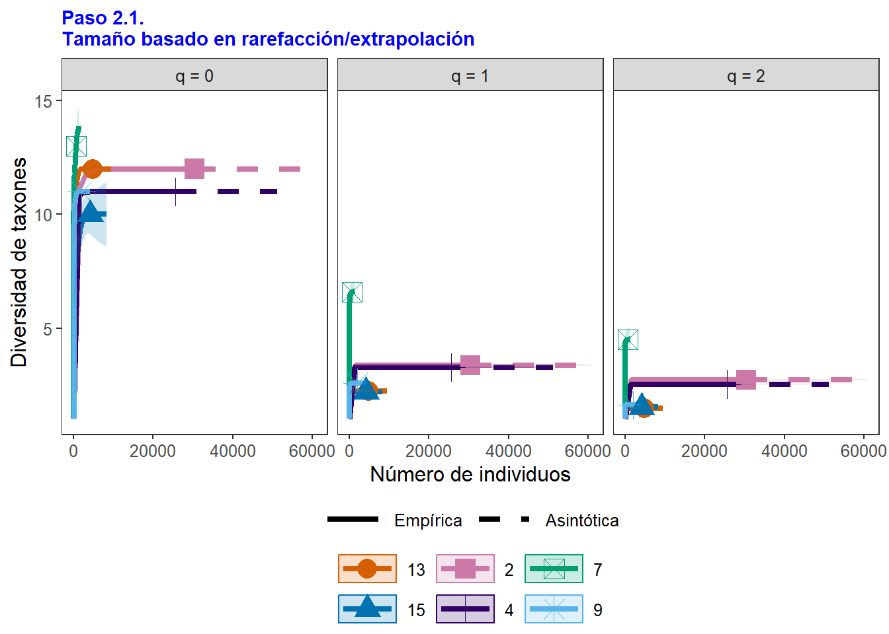
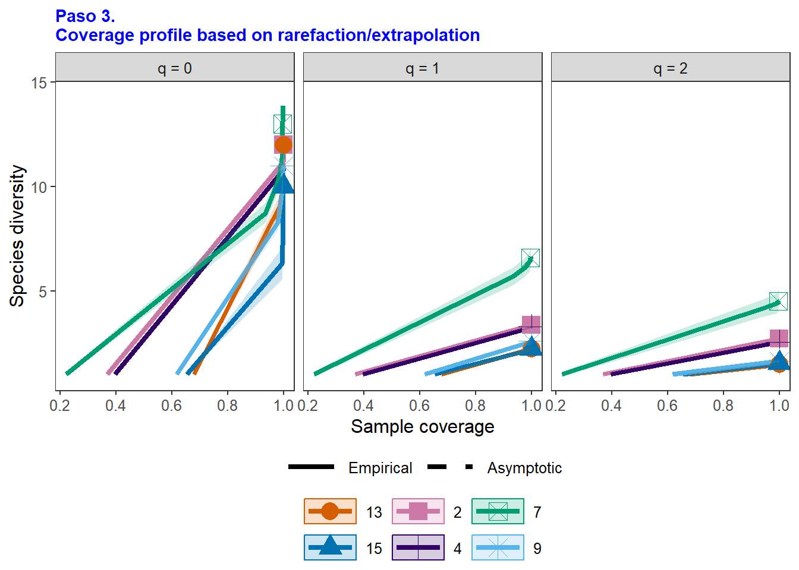
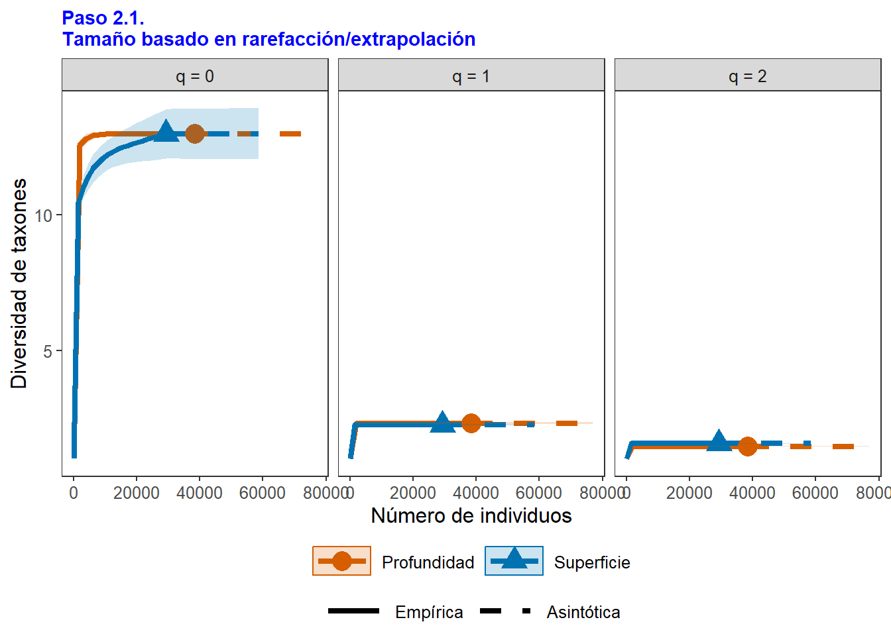
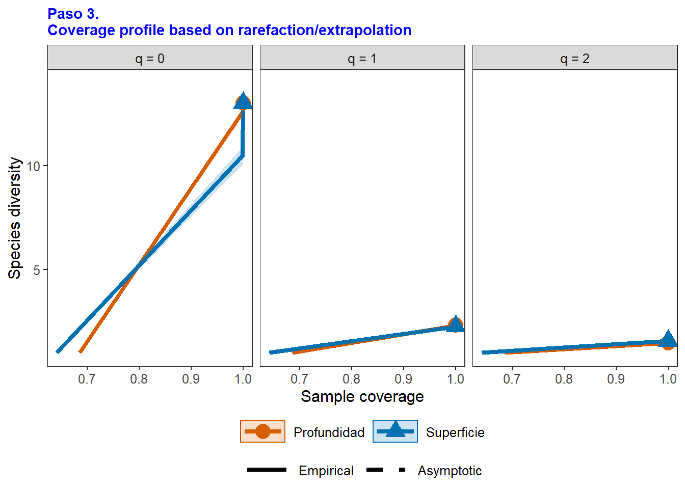
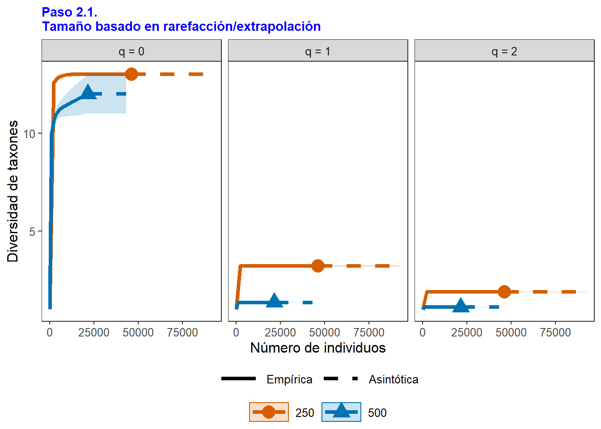
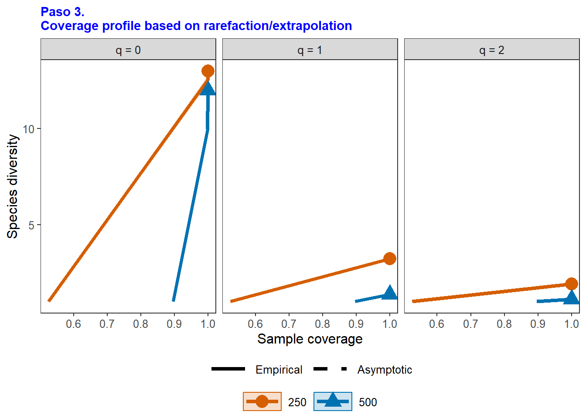

library(tidyverse) # Para diferentes operaciones
library(readxl) # Para la lectura de archivos de Excel
library(corrplot) # Para las figuras de elipses
library(vegan) # Estimadores de diversidad
library(ggrepel) # Rótulos a los puntos de figuras en ggplot2
library(kableExtra) # Edición de las tablas
# Instalar la última versión de github para iNEXT
# install.packages('devtools')
library(devtools)
# install_github('AnneChao/iNEXT.3D')
library(iNEXT.3D)
# install_github('AnneChao/iNEXT.4steps')
library(iNEXT.4steps)
Resumen
El presente ejercicio consiste en el procesamiento inicial de los datos entregados por el profesor Lenin Florez para dar respuesta al siguiente requerimiento:
11. Results. It is suggested to calculate Shannon-Wiener diversity index and Pielou evenness index values to assess zooplankton diversity.
Para este requerimiento, planteo realizar la propuesta de Borcard et al. (2018), con estimadores clásicos de diversidad alfa y de Chao et al. (2020) quienes incorporan a estos parámetros en su propuesta de diversidad en cuatro pasos.
Paso a paso para la organización de los datos de los taxones y ambientales.
Paso 1. Cargar Librerías
Elaborar un fragmento: CTRL+ALT+I, Correr el fragmento: CTRL+SHIFT+ENTER, Correr una línea: CTRL+ENTER
Paso 2. Base de datos de los taxones
La base de datos con los 40 taxones se llamará biol. La base con con las 18 variables ambientales se llamará amb y se cargará más adelante (Tabla 1).
biol <- read_xlsx("datos.xlsx", "Riqueza")
# Impresión de la tabla con los datos
head(biol) %>%
kbl(caption = "", booktabs = F,longtable = T) %>%
kable_classic(full_width = F, html_font = "Cambria")| Estación | Tamaño | Estrato | Grupos | Abundancia | Temperatura | Salinidad | Densidad |
|---|---|---|---|---|---|---|---|
| 2 | 250 | Superficie | Quetognatos | 0 | 30.29749 | 34.69981 | 21.417828 |
| 2 | 250 | Superficie | Sergestidae | 0 | 29.40959 | 25.83323 | 15.085254 |
| 2 | 250 | Superficie | Luciferidae | 0 | 29.59008 | 12.38513 | 5.729643 |
| 2 | 250 | Superficie | Calanoida | 32 | 30.29749 | 34.69981 | 21.417828 |
| 2 | 250 | Superficie | Cyclopoida | 4 | 29.40959 | 25.83323 | 15.085254 |
| 2 | 250 | Superficie | Harpacticoida | 2 | 29.59008 | 12.38513 | 5.729643 |
# Base de datos
biol <- read_xlsx("datos.xlsx", "Riqueza1")
# head(biol)
# View(biol)
biol1 <-
biol %>%
gather(Grupos, Abundancia,
-Estación,-Estrato, -Tamaño)
# Impresión de la tabla con los seis (6) primeros datos (filas)
head(biol1) %>%
kbl(caption = "", booktabs = F,longtable = T) %>%
kable_classic(full_width = F, html_font = "Cambria")| Estación | Estrato | Tamaño | Grupos | Abundancia |
|---|---|---|---|---|
| 2 | Profundidad | 250 | Calanoida | 12672 |
| 2 | Profundidad | 500 | Calanoida | 50 |
| 2 | Superficie | 250 | Calanoida | 568 |
| 2 | Superficie | 500 | Calanoida | 10 |
| 4 | Profundidad | 250 | Calanoida | 10680 |
| 4 | Profundidad | 500 | Calanoida | 52 |
# Incluye a Estratos, Tamaños y Grupos
biol2 <-
biol1 %>%
spread(Estación, Abundancia)
# Impresión de la tabla con los seis (6) primeros datos (filas)
head(biol2) %>%
kbl(caption = "", booktabs = F,longtable = T) %>%
kable_classic(full_width = F, html_font = "Cambria")| Estrato | Tamaño | Grupos | 2 | 4 | 7 | 9 | 13 | 15 |
|---|---|---|---|---|---|---|---|---|
| Profundidad | 250 | Calanoida | 12672 | 10680 | 35 | 1348 | 3451 | 3097 |
| Profundidad | 250 | Cyclopoida | 408 | 928 | 22 | 57 | 219 | 269 |
| Profundidad | 250 | Harpacticoida | 48 | 32 | 0 | 5 | 16 | 0 |
| Profundidad | 250 | Huevos de peces | 135 | 120 | 2 | 16 | 15 | 0 |
| Profundidad | 250 | Larva de crustaceo | 0 | 0 | 0 | 24 | 88 | 88 |
| Profundidad | 250 | Larva Nauplio | 56 | 280 | 1 | 0 | 12 | 0 |
# Solo incluye Grpos
biol3 <- biol1[,-3] %>%
group_by(Estación, Grupos) %>%
summarise(Abundancia = sum(Abundancia, na.rm = TRUE)) %>%
pivot_wider(names_from = Estación, values_from = Abundancia)
# Impresión de la tabla con los seis (6) primeros datos (filas)
head(biol3) %>%
kbl(caption = "", booktabs = F,longtable = T) %>%
kable_classic(full_width = F, html_font = "Cambria")| Grupos | 2 | 4 | 7 | 9 | 13 | 15 |
|---|---|---|---|---|---|---|
| Calanoida | 13300 | 11006 | 288 | 1615 | 3911 | 3362 |
| Cyclopoida | 428 | 947 | 29 | 125 | 237 | 307 |
| Harpacticoida | 50 | 33 | 1 | 45 | 18 | 4 |
| Huevos de peces | 168 | 135 | 6 | 20 | 92 | 2 |
| Larva Nauplio | 57 | 282 | 12 | 0 | 12 | 0 |
| Larva Zoea | 44 | 406 | 59 | 10 | 13 | 4 |
# Transponer usando pivot_longer y pivot_wider
biol4 <- biol3 %>%
pivot_longer(cols = -1,
names_to = "Estación",
values_to = "value") %>%
pivot_wider(names_from = names(biol3)[1],
values_from = value)
# Impresión de la tabla con los seis (6) primeros datos (filas)
head(biol4) %>%
kbl(caption = "", booktabs = F,longtable = T) %>%
kable_classic(full_width = F, html_font = "Cambria")| Estación | Calanoida | Cyclopoida | Harpacticoida | Huevos de peces | Larva Nauplio | Larva Zoea | Larva de crustaceo | Larvas de Crustaceo | Larvas de peces | Luciferidae | Otros | Quetognatos | Sergestidae |
|---|---|---|---|---|---|---|---|---|---|---|---|---|---|
| 2 | 13300 | 428 | 50 | 168 | 57 | 44 | 0 | 16 | 2562 | 12411 | 30 | 86 | 1219 |
| 4 | 11006 | 947 | 33 | 135 | 282 | 406 | 0 | 0 | 98 | 11659 | 234 | 385 | 397 |
| 7 | 288 | 29 | 1 | 6 | 12 | 59 | 124 | 1 | 25 | 20 | 48 | 74 | 24 |
| 9 | 1615 | 125 | 45 | 20 | 0 | 10 | 38 | 0 | 27 | 6 | 93 | 81 | 8 |
| 13 | 3911 | 237 | 18 | 92 | 12 | 13 | 110 | 0 | 12 | 9 | 250 | 81 | 27 |
| 15 | 3362 | 307 | 4 | 2 | 0 | 4 | 112 | 0 | 0 | 5 | 179 | 202 | 16 |
La Tabla 2 muestra los nombres abreviados de los taxones, …
# Nombres abreviados de los grupos taxonómicos
biol5 <-
biol4[,c(-1)] %>%
rename_with(~ abbreviate(.x, minlength = 4))
# Incluir la columna estación
biol5 <- data.frame(biol4[,1], biol5)
# Impresión de la tabla con los datos
biol5 %>%
kbl(caption = "", booktabs = F,longtable = T) %>%
kable_classic(full_width = F, html_font = "Cambria")| Estación | Clnd | Cycl | Hrpc | Hvdp | LrvN | LrvZ | Lrdc | LrdC | Lrdp | Lcfr | Otrs | Qtgn | Srgs |
|---|---|---|---|---|---|---|---|---|---|---|---|---|---|
| 2 | 13300 | 428 | 50 | 168 | 57 | 44 | 0 | 16 | 2562 | 12411 | 30 | 86 | 1219 |
| 4 | 11006 | 947 | 33 | 135 | 282 | 406 | 0 | 0 | 98 | 11659 | 234 | 385 | 397 |
| 7 | 288 | 29 | 1 | 6 | 12 | 59 | 124 | 1 | 25 | 20 | 48 | 74 | 24 |
| 9 | 1615 | 125 | 45 | 20 | 0 | 10 | 38 | 0 | 27 | 6 | 93 | 81 | 8 |
| 13 | 3911 | 237 | 18 | 92 | 12 | 13 | 110 | 0 | 12 | 9 | 250 | 81 | 27 |
| 15 | 3362 | 307 | 4 | 2 | 0 | 4 | 112 | 0 | 0 | 5 | 179 | 202 | 16 |
# Definir nombres completos de las columnas
n.completos <- names(biol4[,-1])
# Definir nombres abreviados de las columnas
n.abreviados <- names(biol5[,-1])
# Crear la tabla combinando nombres completos y abreviados
tabla <- cbind(Grupos = n.completos, Abreviaturas = n.abreviados)
# Impresión de la tabla con los datos
tabla %>%
kbl(caption = "", booktabs = F,longtable = T) %>%
kable_classic(full_width = F, html_font = "Cambria")| Grupos | Abreviaturas |
|---|---|
| Calanoida | Clnd |
| Cyclopoida | Cycl |
| Harpacticoida | Hrpc |
| Huevos de peces | Hvdp |
| Larva Nauplio | LrvN |
| Larva Zoea | LrvZ |
| Larva de crustaceo | Lrdc |
| Larvas de Crustaceo | LrdC |
| Larvas de peces | Lrdp |
| Luciferidae | Lcfr |
| Otros | Otrs |
| Quetognatos | Qtgn |
| Sergestidae | Srgs |
Paso 3. Diversidad alfa**
3.1 Estimadores generales
#
biol6 <- biol5[,-1]
# Estimadores de diversidad alfa (segun Borcard et al. 2018)
N0 <- rowSums(biol6 > 0) # Riqueza de especies
N0 <- specnumber(biol6) # Riqueza de especies (alterno)
H <- diversity(biol6) # Diversidad de Shannon (base e)
N1 <- exp(H) # Diversidd de Shannon (base e)
N2 <- diversity(biol6, "inv") # Diversidad de Simpson (dominancia)
J <- H / log(N0) # Equidad de Pielou (evenness)
E10 <- N1 / N0 # Equidad de Shannon (Razón de Hill)
E20 <- N2 / N0 # Equidad de Simpson (Razón de Hill)# Base de datos con los valores de los esimadores de diversidad alfa
d.alfa <- data.frame(Sitio= biol4[,1], q_0= N0,
q_1= round(N1,1), q_2= round(N2,1),
Equidad_J= round(J,2), H= round(H,2))
colnames(d.alfa) = c("Estación", "q=0", "q=1", "q=2", "Equidad= J", "Shannon =H")
# Edición de la tabla para su impresión
d.alfa %>%
kbl(caption = "", booktabs = F,longtable = T) %>%
kable_classic(full_width = F, html_font = "Cambria")| Estación | q=0 | q=1 | q=2 | Equidad= J | Shannon =H |
|---|---|---|---|---|---|
| 2 | 12 | 3.4 | 2.7 | 0.49 | 1.21 |
| 4 | 11 | 3.3 | 2.5 | 0.49 | 1.19 |
| 7 | 13 | 6.6 | 4.5 | 0.74 | 1.89 |
| 9 | 11 | 2.6 | 1.6 | 0.40 | 0.95 |
| 13 | 12 | 2.2 | 1.5 | 0.32 | 0.81 |
| 15 | 10 | 2.2 | 1.5 | 0.34 | 0.79 |
–
3.2 Curvas RAD (Estaciones, Estratos, Tamaños)
3.2.1 RAD por Estaciones
# Incluye a Estratos, Tamaños y Grupos
# View(biol)
biol6 <-
biol[,c(-2,-3)] %>% # Elimina las columnas de Estrato y Tamaño
gather(Grupos, Abundancia,
-Estación)
# Volver estación y grupos como factor
biol6$Estación = as.factor(biol6$Estación)
biol6$Grupos = as.factor(biol6$Grupos)
# Totales de abundancia por cada grupo
biol6 <-
biol6 %>%
group_by(Estación, Grupos) %>%
summarise(Abundancia = sum(Abundancia, na.rm = TRUE)) `summarise()` has grouped output by 'Estación'. You can override using the
`.groups` argument.# Impresión de la tabla con los seis (6) primeros datos (filas)
head(biol6) %>%
kbl(caption = "", booktabs = F,longtable = T) %>%
kable_classic(full_width = F, html_font = "Cambria")| Estación | Grupos | Abundancia |
|---|---|---|
| 2 | Calanoida | 13300 |
| 2 | Cyclopoida | 428 |
| 2 | Harpacticoida | 50 |
| 2 | Huevos de peces | 168 |
| 2 | Larva de crustaceo | 0 |
| 2 | Larva Nauplio | 57 |
# Insertar una columna "rango" que ranquea a las abundancias de c/spp
biol6$Rango <- ave(biol6$Abundancia, biol6$Estación,
FUN = rank, ties.method = "min")
# Abundancia relativa (Abundancia_rel) de los taxones para cada tramo
biol6$Rel_ab <- biol6$Abundancia / sum(biol6$Abundancia)
# Redondeo a tres decimales para resumir los valores de esta variable
biol6$Rel_ab <- round(biol6$Rel_ab,3)
# Filtrado de los datos de manera descendente por cada rango de abundancia
biol6 <- biol6[order(biol6$Rango, decreasing = TRUE), ]
# Impresión de la tabla con los seis (6) primeros datos (filas)
head(biol6) %>%
kbl(caption = "", booktabs = F,longtable = T) %>%
kable_classic(full_width = F, html_font = "Cambria")| Estación | Grupos | Abundancia | Rango | Rel_ab |
|---|---|---|---|---|
| 2 | Calanoida | 13300 | 13 | 0.196 |
| 4 | Luciferidae | 11659 | 13 | 0.172 |
| 7 | Calanoida | 288 | 13 | 0.004 |
| 9 | Calanoida | 1615 | 13 | 0.024 |
| 13 | Calanoida | 3911 | 13 | 0.058 |
| 15 | Calanoida | 3362 | 13 | 0.050 |
ggplot(biol6,
aes(x = Rango, y = Rel_ab, color = Grupos, label = Grupos)) +
geom_point(size = 3) +
geom_text_repel(aes(label = Grupos), hjust = 1, vjust = 1.5, size = 3,
box.padding = 0.5, point.padding = 0.2, segment.color = NA) +
geom_line(color = "blue") +
scale_x_reverse() +
scale_y_log10() +
labs(x = "Rangos de los Grupos",
y = "log10(Abundancia Relativa)",
color = "Taxa") +
facet_wrap(~Estación, nrow = 1) +
theme_bw() +
theme(panel.grid=element_blank()) +
theme(axis.text.x = element_text(angle = 90, hjust = 1))
3.2.2 RAD por Estratos
# Incluye a Estratos, Tamaños y Grupos
# View(biol)
biol7 <-
biol[,c(-1,-3)] %>% # Elimina las columnas de Estación y Tamaño
gather(Grupos, Abundancia,
-Estrato)
# Volver estación y grupos como factor
biol7$Estrato = as.factor(biol7$Estrato)
biol7$Grupos = as.factor(biol7$Grupos)
# Totales de abundancia por cada grupo
biol7 <-
biol7 %>%
group_by(Estrato, Grupos) %>%
summarise(Abundancia = sum(Abundancia, na.rm = TRUE)) `summarise()` has grouped output by 'Estrato'. You can override using the
`.groups` argument.# Impresión de la tabla con los seis (6) primeros datos (filas)
head(biol7) %>%
kbl(caption = "", booktabs = F,longtable = T) %>%
kable_classic(full_width = F, html_font = "Cambria")| Estrato | Grupos | Abundancia |
|---|---|---|
| Profundidad | Calanoida | 31699 |
| Profundidad | Cyclopoida | 1916 |
| Profundidad | Harpacticoida | 101 |
| Profundidad | Huevos de peces | 311 |
| Profundidad | Larva de crustaceo | 302 |
| Profundidad | Larva Nauplio | 358 |
# Insertar una columna "rango" que ranquea a las abundancias de c/spp
biol7$Rango <- ave(biol7$Abundancia, biol7$Estrato,
FUN = rank, ties.method = "min")
# Abundancia relativa (Abundancia_rel) de los taxones para cada tramo
biol7$Rel_ab <- biol7$Abundancia / sum(biol7$Abundancia)
# Redondeo a tres decimales para resumir los valores de esta variable
biol7$Rel_ab <- round(biol7$Rel_ab,3)
# Filtrado de los datos de manera descendente por cada rango de abundancia
biol7 <- biol7[order(biol7$Rango, decreasing = TRUE), ]
# Impresión de la tabla con los seis (6) primeros datos (filas)
head(biol7) %>%
kbl(caption = "", booktabs = F,longtable = T) %>%
kable_classic(full_width = F, html_font = "Cambria")| Estrato | Grupos | Abundancia | Rango | Rel_ab |
|---|---|---|---|---|
| Profundidad | Calanoida | 31699 | 13 | 0.468 |
| Superficie | Luciferidae | 23193 | 13 | 0.343 |
| Profundidad | Cyclopoida | 1916 | 12 | 0.028 |
| Superficie | Larvas de peces | 2556 | 12 | 0.038 |
| Profundidad | Luciferidae | 917 | 11 | 0.014 |
| Superficie | Calanoida | 1783 | 11 | 0.026 |
ggplot(biol7,
aes(x = Rango, y = Rel_ab, color = Grupos, label = Grupos)) +
geom_point(size = 3) +
geom_text_repel(aes(label = Grupos), hjust = 1, vjust = 1.5, size = 3,
box.padding = 0.5, point.padding = 0.2, segment.color = NA) +
geom_line(color = "blue") +
scale_x_reverse() +
scale_y_log10() +
labs(x = "Rangos de los Grupos",
y = "log10(Abundancia Relativa)",
color = "Taxa") +
facet_wrap(~Estrato, nrow = 1) +
theme_bw() +
theme(panel.grid=element_blank()) +
theme(axis.text.x = element_text(angle = 90, hjust = 1))
3.2.3 RAD por Tamaños
# Incluye a Estratos, Tamaños y Grupos
# View(biol)
biol8 <-
biol[,c(-1,-2)] %>% # Elimina las columnas de Estación y Estrato
gather(Grupos, Abundancia,
-Tamaño)
# Volver estación y grupos como factor
biol8$Tamaño = as.factor(biol8$Tamaño)
biol8$Grupos = as.factor(biol8$Grupos)
# Totales de abundancia por cada grupo
biol8 <-
biol8 %>%
group_by(Tamaño, Grupos) %>%
summarise(Abundancia = sum(Abundancia, na.rm = TRUE)) `summarise()` has grouped output by 'Tamaño'. You can override using the
`.groups` argument.# Impresión de la tabla con los seis (6) primeros datos (filas)
head(biol8) %>%
kbl(caption = "", booktabs = F,longtable = T) %>%
kable_classic(full_width = F, html_font = "Cambria")| Tamaño | Grupos | Abundancia |
|---|---|---|
| 250 | Calanoida | 32996 |
| 250 | Cyclopoida | 2054 |
| 250 | Harpacticoida | 151 |
| 250 | Huevos de peces | 350 |
| 250 | Larva de crustaceo | 282 |
| 250 | Larva Nauplio | 354 |
# Insertar una columna "rango" que ranquea a las abundancias de c/spp
biol8$Rango <- ave(biol8$Abundancia, biol8$Tamaño,
FUN = rank, ties.method = "min")
# Abundancia relativa (Abundancia_rel) de los taxones para cada tramo
biol8$Rel_ab <- biol8$Abundancia / sum(biol8$Abundancia)
# Redondeo a tres decimales para resumir los valores de esta variable
biol8$Rel_ab <- round(biol8$Rel_ab,3)
# Filtrado de los datos de manera descendente por cada rango de abundancia
biol7 <- biol8[order(biol8$Rango, decreasing = TRUE), ]
# Impresión de la tabla con los seis (6) primeros datos (filas)
head(biol8) %>%
kbl(caption = "", booktabs = F,longtable = T) %>%
kable_classic(full_width = F, html_font = "Cambria")| Tamaño | Grupos | Abundancia | Rango | Rel_ab |
|---|---|---|---|---|
| 250 | Calanoida | 32996 | 13 | 0.487 |
| 250 | Cyclopoida | 2054 | 10 | 0.030 |
| 250 | Harpacticoida | 151 | 2 | 0.002 |
| 250 | Huevos de peces | 350 | 4 | 0.005 |
| 250 | Larva de crustaceo | 282 | 3 | 0.004 |
| 250 | Larva Nauplio | 354 | 5 | 0.005 |
ggplot(biol8,
aes(x = Rango, y = Rel_ab, color = Grupos, label = Grupos)) +
geom_point(size = 3) +
geom_text_repel(aes(label = Grupos), hjust = 1, vjust = 1.5, size = 3,
box.padding = 0.5, point.padding = 0.2, segment.color = NA) +
geom_line(color = "blue") +
scale_x_reverse() +
scale_y_log10() +
labs(x = "Rangos de los Grupos",
y = "log10(Abundancia Relativa)",
color = "Taxa") +
facet_wrap(~Tamaño, nrow = 1) +
theme_bw() +
theme(panel.grid=element_blank()) +
theme(axis.text.x = element_text(angle = 90, hjust = 1))
3.3 Alfa en cuatro pasos (Chao et al. 2020).
3.3.1 Alfa por Estaciones
# Incluye a Estratos, Tamaños y Grupos
# View(biol)
biol6 <-
biol[,c(-2,-3)] %>% # Elimina las columnas de Estrato y Tamaño
gather(Grupos, Abundancia,
-Estación)
# Volver estación y grupos como factor
biol6$Estación = as.factor(biol6$Estación)
biol6$Grupos = as.factor(biol6$Grupos)
# Totales de abundancia por cada grupo
biol6 <-
biol6 %>%
group_by(Estación, Grupos) %>%
summarise(Abundancia = sum(Abundancia, na.rm = TRUE)) `summarise()` has grouped output by 'Estación'. You can override using the
`.groups` argument.# Organización por sitios
biol6.1 <-
biol6 %>%
spread (Estación, Abundancia)
# Impresión de la tabla con los seis (6) primeros datos (filas)
head(biol6.1) %>%
kbl(caption = "", booktabs = F,longtable = T) %>%
kable_classic(full_width = F, html_font = "Cambria")| Grupos | 2 | 4 | 7 | 9 | 13 | 15 |
|---|---|---|---|---|---|---|
| Calanoida | 13300 | 11006 | 288 | 1615 | 3911 | 3362 |
| Cyclopoida | 428 | 947 | 29 | 125 | 237 | 307 |
| Harpacticoida | 50 | 33 | 1 | 45 | 18 | 4 |
| Huevos de peces | 168 | 135 | 6 | 20 | 92 | 2 |
| Larva de crustaceo | 0 | 0 | 124 | 38 | 110 | 112 |
| Larva Nauplio | 57 | 282 | 12 | 0 | 12 | 0 |
Calculo de los cuatro pasos por Estaciones
# Convertir la tabla anterior (formato tibble) a dataframe
biol6.1 <- as.data.frame(biol6.1)
# Resultados de la prueba de diversidad alfa en 4 pasos
result1 <- iNEXT4steps(data = biol6.1[,2:7],
datatype = "abundance")
# result1$summaryInsumos del análisis
# Insumos de iNEXT
names(result1$summary)[1] "STEP 1. Sample completeness profiles"
[2] "STEP 2b. Observed diversity values and asymptotic estimates"
[3] "STEP 3. Non-asymptotic coverage-based rarefaction and extrapolation analysis"
[4] "STEP 4. Evenness among species abundances of orders q = 1 and 2 at Cmax based on the normalized slope of a diversity profile"Paso 1. El perfil de completitud
# Paso 1. Perfil de completitud
result1$summary$"STEP 1. Sample completeness profiles" %>%
kbl(caption = "", booktabs = F,longtable = T) %>%
kable_classic(full_width = F, html_font = "Cambria")| Assemblage | q = 0 | q = 1 | q = 2 |
|---|---|---|---|
| 13 | 1.00 | 1 | 1 |
| 15 | 1.00 | 1 | 1 |
| 2 | 1.00 | 1 | 1 |
| 4 | 1.00 | 1 | 1 |
| 7 | 0.93 | 1 | 1 |
| 9 | 1.00 | 1 | 1 |
Paso 2. El perfil asintótico
names(result1$summary$"STEP 2b. Observed diversity values and asymptotic estimates")[1] "Assemblage" "qTD" "TD_obs" "TD_asy" "s.e."
[6] "qTD.LCL" "qTD.UCL" # Asignación del paso 2 como "asinto"
asinto = result1$summary$"STEP 2b. Observed diversity values and asymptotic estimates" # Nueva columna de la tabla, titulada "sin.det"
asinto <-
asinto %>%
mutate(sin.det = round(TD_asy - TD_obs))asinto = data.frame(Ensamblaje = asinto$Assemblage,
Estimador = asinto$qTD,
D.Observada= round(asinto$TD_obs),
D.Estimada = asinto$TD_asy,
Sin.Det = asinto$sin.det )
asinto <-
asinto %>%
mutate(Estimador = recode(Estimador,
"Species richness" = "q=0, Riqueza",
"Shannon diversity" = "q=1, Shannon",
"Simpson diversity" = "q=2, Simpson"))
# Paso 2. Perfil Asintótico
asinto %>%
kbl(caption = "", booktabs = F,longtable = T) %>%
kable_classic(full_width = F, html_font = "Cambria") | Ensamblaje | Estimador | D.Observada | D.Estimada | Sin.Det |
|---|---|---|---|---|
| 13 | q=0, Riqueza | 12 | 12.00 | 0 |
| 13 | q=1, Shannon | 2 | 2.24 | 0 |
| 13 | q=2, Simpson | 1 | 1.47 | 0 |
| 15 | q=0, Riqueza | 10 | 10.00 | 0 |
| 15 | q=1, Shannon | 2 | 2.21 | 0 |
| 15 | q=2, Simpson | 2 | 1.53 | 0 |
| 2 | q=0, Riqueza | 12 | 12.00 | 0 |
| 2 | q=1, Shannon | 3 | 3.36 | 0 |
| 2 | q=2, Simpson | 3 | 2.72 | 0 |
| 4 | q=0, Riqueza | 11 | 11.00 | 0 |
| 4 | q=1, Shannon | 3 | 3.28 | 0 |
| 4 | q=2, Simpson | 3 | 2.53 | 0 |
| 7 | q=0, Riqueza | 13 | 14.00 | 1 |
| 7 | q=1, Shannon | 7 | 6.65 | 0 |
| 7 | q=2, Simpson | 5 | 4.53 | 0 |
| 9 | q=0, Riqueza | 11 | 11.00 | 0 |
| 9 | q=1, Shannon | 3 | 2.60 | 0 |
| 9 | q=2, Simpson | 2 | 1.62 | 0 |
Paso 3. El análisis no asintótico
names(result1$summary)[1] "STEP 1. Sample completeness profiles"
[2] "STEP 2b. Observed diversity values and asymptotic estimates"
[3] "STEP 3. Non-asymptotic coverage-based rarefaction and extrapolation analysis"
[4] "STEP 4. Evenness among species abundances of orders q = 1 and 2 at Cmax based on the normalized slope of a diversity profile"# Paso 3. Perfil no asintótico basado en interpolación y extrapolación
result1$summary$"STEP 3. Non-asymptotic coverage-based rarefaction and extrapolation analysis" %>%
kbl(caption = "", booktabs = F,longtable = T) %>%
kable_classic(full_width = F, html_font = "Cambria")| Cmax = 1 | q = 0 | q = 1 | q = 2 |
|---|---|---|---|
| 13 | 11.88 | 2.23 | 1.47 |
| 15 | 9.75 | 2.21 | 1.53 |
| 2 | 11.55 | 3.36 | 2.72 |
| 4 | 10.75 | 3.26 | 2.53 |
| 7 | 13.86 | 6.63 | 4.52 |
| 9 | 10.93 | 2.58 | 1.62 |
Paso 4. El patrón de uniformidad
# Paso 4. Perfil de uniformidad
result1$summary$"STEP 4. Evenness among species abundances of orders q = 1 and 2 at Cmax based on the normalized slope of a diversity profile" %>%
kbl(caption = "", booktabs = F,longtable = T) %>%
kable_classic(full_width = F, html_font = "Cambria")| Cmax = 1 | Pielou J' | q = 1 | q = 2 |
|---|---|---|---|
| 13 | 0.32 | 0.11 | 0.04 |
| 15 | 0.35 | 0.14 | 0.06 |
| 2 | 0.49 | 0.22 | 0.16 |
| 4 | 0.50 | 0.23 | 0.16 |
| 7 | 0.72 | 0.44 | 0.27 |
| 9 | 0.40 | 0.16 | 0.06 |
Paso 2. Perfil de rarefacción y de extrapolación
# Paso 2.1. Figura del tamaño basado en rarefacción / extrapolación
p <- result1$figure[[2]]
p + labs(x= "Número de individuos", y= "Diversidad de taxones",
title = "Paso 2.1. \nTamaño basado en rarefacción/extrapolación") +
scale_linetype_manual("",values = c(1,2),labels=c("Empírica","Asintótica")) +
theme(panel.grid=element_blank()) 
# Paso 3. Figura del perfil no asintótico basado en rarefacción/extrapolación
p <- result1$figure[[4]]
p+labs(x="Sample coverage", y="Species diversity",
title = "Paso 3. \nCoverage profile based on rarefaction/extrapolation") +
scale_linetype_manual("",values = c(1,2),labels=c("Empirical","Asymptotic")) +
theme(panel.grid=element_blank()) 
3.3.2 Alfa por Estratos
# Incluye a Estratos, Tamaños y Grupos
# View(biol)
biol7 <-
biol[,c(-1,-3)] %>% # Elimina las columnas de Estación y Tamaño
gather(Grupos, Abundancia,
-Estrato)
# Volver estación y grupos como factor
biol7$Estrato = as.factor(biol7$Estrato)
biol7$Grupos = as.factor(biol7$Grupos)
# Totales de abundancia por cada grupo
biol7 <-
biol7 %>%
group_by(Estrato, Grupos) %>%
summarise(Abundancia = sum(Abundancia, na.rm = TRUE)) `summarise()` has grouped output by 'Estrato'. You can override using the
`.groups` argument.# Organización por sitios
biol7.1 <-
biol7 %>%
spread (Estrato, Abundancia)
# Impresión de la tabla con los seis (6) primeros datos (filas)
head(biol7.1) %>%
kbl(caption = "", booktabs = F,longtable = T) %>%
kable_classic(full_width = F, html_font = "Cambria")| Grupos | Profundidad | Superficie |
|---|---|---|
| Calanoida | 31699 | 1783 |
| Cyclopoida | 1916 | 157 |
| Harpacticoida | 101 | 50 |
| Huevos de peces | 311 | 112 |
| Larva de crustaceo | 302 | 82 |
| Larva Nauplio | 358 | 5 |
Calculo de los cuatro pasos por Estaciones
# Convertir la tabla anterior (formato tibble) a dataframe
biol7.1 <- as.data.frame(biol7.1)
# Resultados de la prueba de diversidad alfa en 4 pasos
result2 <- iNEXT4steps(data = biol7.1[,2:3],
datatype = "abundance")
# result1$summaryInsumos del análisis
# Insumos de iNEXT
names(result2$summary)[1] "STEP 1. Sample completeness profiles"
[2] "STEP 2b. Observed diversity values and asymptotic estimates"
[3] "STEP 3. Non-asymptotic coverage-based rarefaction and extrapolation analysis"
[4] "STEP 4. Evenness among species abundances of orders q = 1 and 2 at Cmax based on the normalized slope of a diversity profile"Paso 1. El perfil de completitud
# Paso 1. Perfil de completitud
result2$summary$"STEP 1. Sample completeness profiles" %>%
kbl(caption = "", booktabs = F,longtable = T) %>%
kable_classic(full_width = F, html_font = "Cambria")| Assemblage | q = 0 | q = 1 | q = 2 |
|---|---|---|---|
| Profundidad | 1 | 1 | 1 |
| Superficie | 1 | 1 | 1 |
Paso 2. El perfil asintótico
names(result2$summary$"STEP 2b. Observed diversity values and asymptotic estimates")[1] "Assemblage" "qTD" "TD_obs" "TD_asy" "s.e."
[6] "qTD.LCL" "qTD.UCL" # Asignación del paso 2 como "asinto"
asinto = result2$summary$"STEP 2b. Observed diversity values and asymptotic estimates" # Nueva columna de la tabla, titulada "sin.det"
asinto <-
asinto %>%
mutate(sin.det = round(TD_asy - TD_obs))asinto = data.frame(Ensamblaje = asinto$Assemblage,
Estimador = asinto$qTD,
D.Observada= round(asinto$TD_obs),
D.Estimada = asinto$TD_asy,
Sin.Det = asinto$sin.det )
asinto <-
asinto %>%
mutate(Estimador = recode(Estimador,
"Species richness" = "q=0, Riqueza",
"Shannon diversity" = "q=1, Shannon",
"Simpson diversity" = "q=2, Simpson"))
# Paso 2. Perfil Asintótico
asinto %>%
kbl(caption = "", booktabs = F,longtable = T) %>%
kable_classic(full_width = F, html_font = "Cambria") | Ensamblaje | Estimador | D.Observada | D.Estimada | Sin.Det |
|---|---|---|---|---|
| Profundidad | q=0, Riqueza | 13 | 13.00 | 0 |
| Profundidad | q=1, Shannon | 2 | 2.31 | 0 |
| Profundidad | q=2, Simpson | 1 | 1.46 | 0 |
| Superficie | q=0, Riqueza | 13 | 13.00 | 0 |
| Superficie | q=1, Shannon | 2 | 2.25 | 0 |
| Superficie | q=2, Simpson | 2 | 1.56 | 0 |
Paso 3. El análisis no asintótico
names(result2$summary)[1] "STEP 1. Sample completeness profiles"
[2] "STEP 2b. Observed diversity values and asymptotic estimates"
[3] "STEP 3. Non-asymptotic coverage-based rarefaction and extrapolation analysis"
[4] "STEP 4. Evenness among species abundances of orders q = 1 and 2 at Cmax based on the normalized slope of a diversity profile"# Paso 3. Perfil no asintótico basado en interpolación y extrapolación
result2$summary$"STEP 3. Non-asymptotic coverage-based rarefaction and extrapolation analysis" %>%
kbl(caption = "", booktabs = F,longtable = T) %>%
kable_classic(full_width = F, html_font = "Cambria")| Cmax = 1 | q = 0 | q = 1 | q = 2 |
|---|---|---|---|
| Profundidad | 13 | 2.31 | 1.46 |
| Superficie | 13 | 2.25 | 1.56 |
Paso 4. El patrón de uniformidad
# Paso 4. Perfil de uniformidad
result2$summary$"STEP 4. Evenness among species abundances of orders q = 1 and 2 at Cmax based on the normalized slope of a diversity profile" %>%
kbl(caption = "", booktabs = F,longtable = T) %>%
kable_classic(full_width = F, html_font = "Cambria")| Cmax = 1 | Pielou J' | q = 1 | q = 2 |
|---|---|---|---|
| Profundidad | 0.33 | 0.11 | 0.04 |
| Superficie | 0.32 | 0.10 | 0.05 |
Paso 2. Perfil de rarefacción y de extrapolación
# Paso 2.1. Figura del tamaño basado en rarefacción / extrapolación
p <- result2$figure[[2]]
p + labs(x= "Número de individuos", y= "Diversidad de taxones",
title = "Paso 2.1. \nTamaño basado en rarefacción/extrapolación") +
scale_linetype_manual("",values = c(1,2),labels=c("Empírica","Asintótica")) +
theme(panel.grid=element_blank()) 
# Paso 3. Figura del perfil no asintótico basado en rarefacción/extrapolación
p <- result2$figure[[4]]
p+labs(x="Sample coverage", y="Species diversity",
title = "Paso 3. \nCoverage profile based on rarefaction/extrapolation") +
scale_linetype_manual("",values = c(1,2),labels=c("Empirical","Asymptotic")) +
theme(panel.grid=element_blank()) 
3.3.3 Alfa por Tamaños
# Incluye a Estratos, Tamaños y Grupos
# View(biol)
biol8 <-
biol[,c(-1,-2)] %>% # Elimina las columnas de Estación y Estrato
gather(Grupos, Abundancia,
-Tamaño)
# Volver estación y grupos como factor
biol8$Tamaño = as.factor(biol8$Tamaño)
biol8$Grupos = as.factor(biol8$Grupos)
# Totales de abundancia por cada grupo
biol8 <-
biol8 %>%
group_by(Tamaño, Grupos) %>%
summarise(Abundancia = sum(Abundancia, na.rm = TRUE)) `summarise()` has grouped output by 'Tamaño'. You can override using the
`.groups` argument.# Organización por sitios
biol8.1 <-
biol8 %>%
spread (Tamaño, Abundancia)
# Impresión de la tabla con los seis (6) primeros datos (filas)
head(biol8.1) %>%
kbl(caption = "", booktabs = F,longtable = T) %>%
kable_classic(full_width = F, html_font = "Cambria")| Grupos | 250 | 500 |
|---|---|---|
| Calanoida | 32996 | 486 |
| Cyclopoida | 2054 | 19 |
| Harpacticoida | 151 | 0 |
| Huevos de peces | 350 | 73 |
| Larva de crustaceo | 282 | 102 |
| Larva Nauplio | 354 | 9 |
Calculo de los cuatro pasos por Estaciones
# Convertir la tabla anterior (formato tibble) a dataframe
biol8.1 <- as.data.frame(biol8.1)
# Resultados de la prueba de diversidad alfa en 4 pasos
result3 <- iNEXT4steps(data = biol8.1[,2:3],
datatype = "abundance")
# result1$summaryInsumos del análisis
# Insumos de iNEXT
names(result3$summary)[1] "STEP 1. Sample completeness profiles"
[2] "STEP 2b. Observed diversity values and asymptotic estimates"
[3] "STEP 3. Non-asymptotic coverage-based rarefaction and extrapolation analysis"
[4] "STEP 4. Evenness among species abundances of orders q = 1 and 2 at Cmax based on the normalized slope of a diversity profile"Paso 1. El perfil de completitud
# Paso 1. Perfil de completitud
result3$summary$"STEP 1. Sample completeness profiles" %>%
kbl(caption = "", booktabs = F,longtable = T) %>%
kable_classic(full_width = F, html_font = "Cambria")| Assemblage | q = 0 | q = 1 | q = 2 |
|---|---|---|---|
| 250 | 1 | 1 | 1 |
| 500 | 1 | 1 | 1 |
Paso 2. El perfil asintótico
names(result3$summary$"STEP 2b. Observed diversity values and asymptotic estimates")[1] "Assemblage" "qTD" "TD_obs" "TD_asy" "s.e."
[6] "qTD.LCL" "qTD.UCL" # Asignación del paso 2 como "asinto"
asinto = result3$summary$"STEP 2b. Observed diversity values and asymptotic estimates" # Nueva columna de la tabla, titulada "sin.det"
asinto <-
asinto %>%
mutate(sin.det = round(TD_asy - TD_obs))asinto = data.frame(Ensamblaje = asinto$Assemblage,
Estimador = asinto$qTD,
D.Observada= round(asinto$TD_obs),
D.Estimada = asinto$TD_asy,
Sin.Det = asinto$sin.det )
asinto <-
asinto %>%
mutate(Estimador = recode(Estimador,
"Species richness" = "q=0, Riqueza",
"Shannon diversity" = "q=1, Shannon",
"Simpson diversity" = "q=2, Simpson"))
# Paso 2. Perfil Asintótico
asinto %>%
kbl(caption = "", booktabs = F,longtable = T) %>%
kable_classic(full_width = F, html_font = "Cambria") | Ensamblaje | Estimador | D.Observada | D.Estimada | Sin.Det |
|---|---|---|---|---|
| 250 | q=0, Riqueza | 13 | 13.00 | 0 |
| 250 | q=1, Shannon | 3 | 3.22 | 0 |
| 250 | q=2, Simpson | 2 | 1.90 | 0 |
| 500 | q=0, Riqueza | 12 | 12.00 | 0 |
| 500 | q=1, Shannon | 1 | 1.36 | 0 |
| 500 | q=2, Simpson | 1 | 1.11 | 0 |
Paso 3. El análisis no asintótico
names(result3$summary)[1] "STEP 1. Sample completeness profiles"
[2] "STEP 2b. Observed diversity values and asymptotic estimates"
[3] "STEP 3. Non-asymptotic coverage-based rarefaction and extrapolation analysis"
[4] "STEP 4. Evenness among species abundances of orders q = 1 and 2 at Cmax based on the normalized slope of a diversity profile"# Paso 3. Perfil no asintótico basado en interpolación y extrapolación
result3$summary$"STEP 3. Non-asymptotic coverage-based rarefaction and extrapolation analysis" %>%
kbl(caption = "", booktabs = F,longtable = T) %>%
kable_classic(full_width = F, html_font = "Cambria")| Cmax = 1 | q = 0 | q = 1 | q = 2 |
|---|---|---|---|
| 250 | 13 | 3.22 | 1.90 |
| 500 | 12 | 1.36 | 1.11 |
Paso 4. El patrón de uniformidad
# Paso 4. Perfil de uniformidad
result3$summary$"STEP 4. Evenness among species abundances of orders q = 1 and 2 at Cmax based on the normalized slope of a diversity profile" %>%
kbl(caption = "", booktabs = F,longtable = T) %>%
kable_classic(full_width = F, html_font = "Cambria")| Cmax = 1 | Pielou J' | q = 1 | q = 2 |
|---|---|---|---|
| 250 | 0.46 | 0.18 | 0.08 |
| 500 | 0.12 | 0.03 | 0.01 |
Paso 2. Perfil de rarefacción y de extrapolación
# Paso 2.1. Figura del tamaño basado en rarefacción / extrapolación
p <- result3$figure[[2]]
p + labs(x= "Número de individuos", y= "Diversidad de taxones",
title = "Paso 2.1. \nTamaño basado en rarefacción/extrapolación") +
scale_linetype_manual("",values = c(1,2),labels=c("Empírica","Asintótica")) +
theme(panel.grid=element_blank()) 
# Paso 3. Figura del perfil no asintótico basado en rarefacción/extrapolación
p <- result3$figure[[4]]
p+labs(x="Sample coverage", y="Species diversity",
title = "Paso 3. \nCoverage profile based on rarefaction/extrapolation") +
scale_linetype_manual("",values = c(1,2),labels=c("Empirical","Asymptotic")) +
theme(panel.grid=element_blank()) 